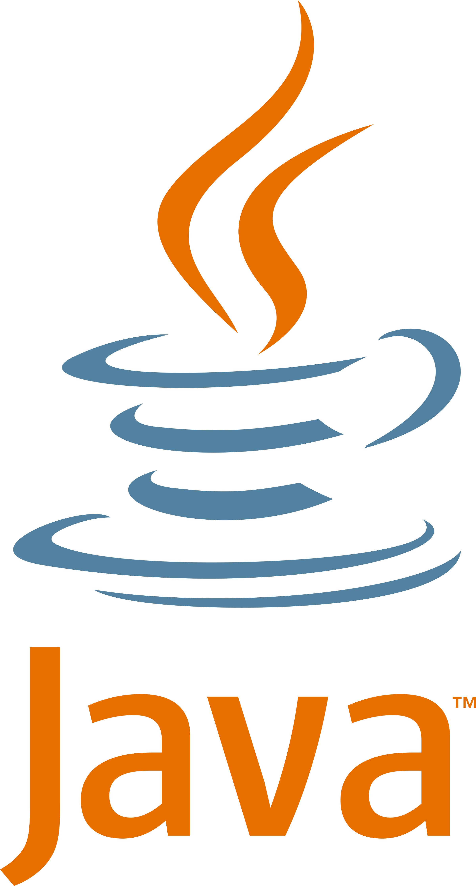

Top 5 Programming Languages
Programming is important because it powers the technology that drives our modern world.
From smartphones to healthcare systems, coding enables innovation, problem-solving, and automation.
It empowers people to build tools, analyze data, and create solutions that improve lives, drive economies, and shape the future.

Coding is the process of giving instructions to computers to perform tasks.
It’s a valuable skill in today’s tech-driven world. Here are five popular programming languages to learn:
- Python
- JavaScript
- Java
- C++
- C#
Python

- Created: 20 February 1991
- Uses: Web Development, Data Science, Software Development, Bussines apps
- Difficulty: Easy
JavaScript

- Created: 4 December 1995
- Uses: Mobile Apps, Web Development, Interactive capabalities, Game Development
- Difficulty: Medium
Java

- Created: 23 January 1996
- Uses: Large Data, AI, Video Games, Software Development
- Difficulty: Medium
C++

- Created: 1985
- Uses: Browsers, Databases, Video Games, Embedded systems
- Difficulty: Quite Hard
C#
- Created: 2000
- Uses: Windows applications, software development, game development, mobile development
- Difficulty: Quite Easy